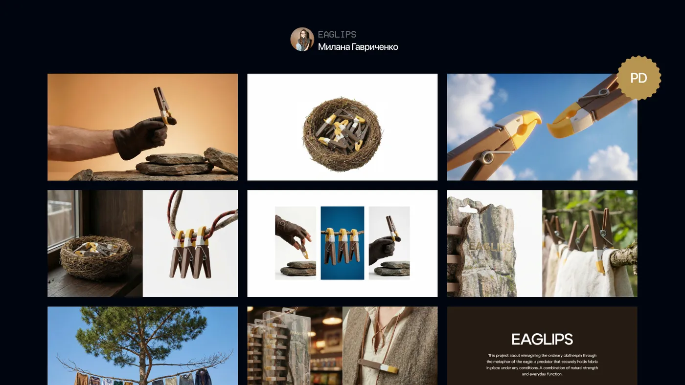
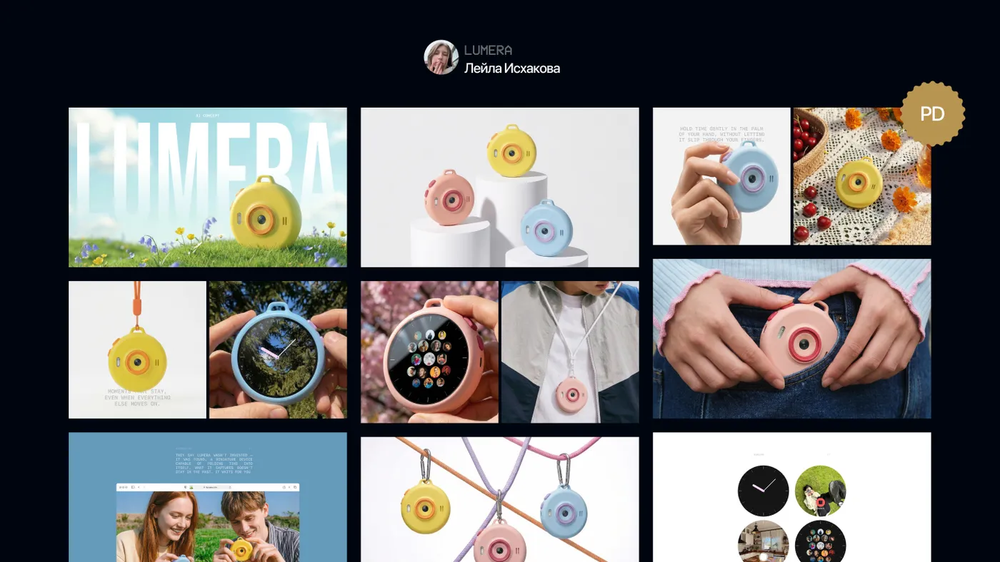
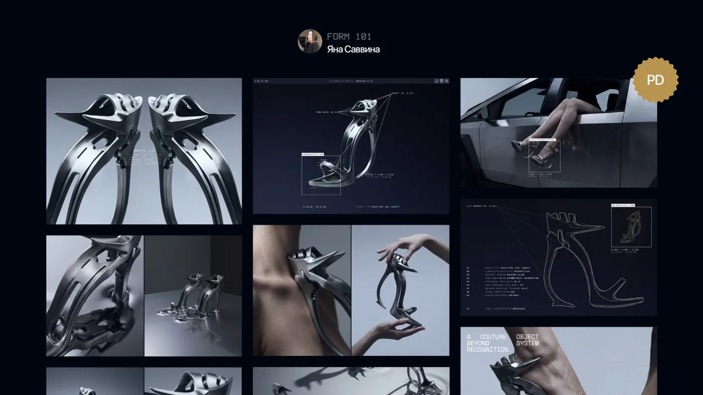

Макет одной лентой
Весь лендинг одной длинной картинкой, одинаковые скриншоты подряд, нет обложки и текста о проекте. Даже сильная работа тонет: зритель не понимает, что смотреть, и уходит на третьем экране.
Как превратить проект в кейс, который досматривают до конца: контент, мокапы, стиль, ритм слайдов, обложка, анимация и публикация. Для лендинга, лонгрида, корпоративного сайта, приложения, 3D и AI-проектов. В каждом этапе — шаги, что можно отдать нейросети, чек-лист и готовые инструкции для чата.
Сохрани ссылку, чтобы не потерять: гайд нужен в конце каждого проекта.
Работодатель или заказчик не откроет твой макет в Figma и не долистает его до конца. Он посмотрит кейс, секунд тридцать, и по ним решит, смотреть ли дальше. Как трейлер: из двух часов фильма монтируют две минуты, показывают лучшие сцены и чередуют общие и крупные планы.
Весь лендинг одной длинной картинкой, одинаковые скриншоты подряд, нет обложки и текста о проекте. Даже сильная работа тонет: зритель не понимает, что смотреть, и уходит на третьем экране.
Обложка, идея одной фразой, лучшие места крупно, смена планов, адаптив на настоящих устройствах. Макет тот же, а проект выглядит сильнее. Хорошая подача вытягивает работу, плохая топит даже сильный проект.
Читать подряд не нужно. Открой свой тип проекта, затем иди по этапам: каждый заканчивается чек-листом.
Кейс показывает лучшее в проекте крупно и в ритме, чтобы его захотелось досмотреть. Это отдельная задача проекта: закладывай на неё один рабочий день, 15–20% времени всего проекта. Лучше выпустить хороший кейс сейчас, чем никогда не выпустить идеальный.
Этапы упаковки у всех проектов общие. Отличается главное: что вынести на обложку, какие слайды обязательны и на чём держится ритм. Нажми на обложку, чтобы открыть кейс студента целиком.
Главное — концепция и то, как она живёт в интерфейсе. Обязательно: обложка с главным экраном, задача и концепция, стиль, 3–4 ключевых блока, адаптив на десктопе, планшете и телефоне. Если метафора не влезла в интерфейс, покажи её здесь: обложка, история идеи, носители и мокапы.
Главное — история и визуальный язык. Лонгрид длинный, поэтому его особенно важно разрезать на сюжеты: обложка, о проекте, дизайн-система, 3–5 самых сильных разворотов крупно, детали типографики и графики, мобильная версия. Целиком лонгрид в кейс не выкладывают.
Главное — система: несколько страниц живут по одним правилам. Обязательно: обложка, задача и позиционирование компании, карта сайта, главная и 2–3 внутренние страницы, UI-кит, адаптив. Если сайт большой, раздели его на два кейса: например, айдентика и сайт отдельно.
Главное — интерфейс и сценарий. На обложке сам интерфейс в мокапе, а не иконка приложения: так сразу понятно, о чём кейс. Обязательно: задача, исследование (персоны, JTBD, user flow), вайрфреймы, ключевые экраны крупно, дизайн-система, айдентика и промо-сайт, если он есть. Шаблон — «Кейсы для приложений».
Главное — объект и процесс. В 3D работает тот же принцип крупности, что и в кино: общий вид, средний план, деталь материала. Обязательно: концепция, референсы, скетчи и прототип из простых форм, сцена в Blender, финальные рендеры, продукт на носителях или в контексте, сайт продукта, если он есть. Этапы кейса — в файле «3D-проекты».
Главное — идея и метод. AI-кейс легко превращается в альбом картинок, поэтому у курса свой скелет из восьми экранов, и разметка «что сделала нейросеть, что сделал я» стоит до процесса, а не сноской в конце. Подробно — в методичке Mission to AI «Оформление кейса».
| Экран | Что внутри | Правило |
|---|---|---|
| 1. Обложка | Название, подпись «AI concept», «AI photoshoot» или «AI video», самый сильный кадр | Одна картинка, одно название |
| 2. Идея | Что за продукт, для кого, какая задача — 2–4 предложения | Идея одной фразой |
| 3. AI-разметка | Слайд «Все изображения созданы с помощью AI» и колонка «что сделал я» | До процесса, крупно |
| 4. Процесс: поиск | Мудборд, стиль-якорь, 2–3 отброшенных направления с подписью «почему нет» | Решения, а не свалка генераций |
| 5. Процесс: опора | Карточка продукта, персонажа или локации; раскадровка для видео | Серия держится на опоре |
| 6. До / после | Сырая генерация и финальный кадр после правок и вёрстки | 1–3 пары |
| 7. Результат | Финальные кадры, key visual, адаптации, мокапы, видео | Одна мысль — один экран |
| 8. Контакты | Имя, роль, Telegram, почта и строка «что могу сделать для вас» | Кнопка, а не «спасибо за внимание» |

EaglipsМилана Гавриченко · метафора орла считывается с первого экрана
LumeraЛейла Исхакова · от продукта к сайту
FORM 101Яна Саввина · процесс в языке объектаВ таблицах — шаги, что можно отдать нейросети и что остаётся за тобой. Время — оценки без замера, у тебя может получиться иначе.
Перед сборкой кейса реши, что в проекте главное, и собери всё, что покажешь. Самая частая ошибка — открыть шаблон кейса без готового контента и придумывать тексты и экраны на ходу.
| Шаг | Отдаём нейросети | Оставляем себе | Время |
|---|---|---|---|
| Главное и категория | — | Что в проекте самое сильное: концепция, графика или интерфейс. Категория на площадке, например веб-дизайн | 10 мин |
| Тексты кейса | Черновик «О проекте» по формуле и подписи к слайдам из паспорта и журнала | Выбор варианта и правка под свой голос | 20 мин |
| Экраны | — | Нарезать проект на десктоп, планшет и телефон, отметить лучшие блоки | 20 мин |
| Артефакты процесса | — | Мудборд, наброски, вайрфреймы, сцены из Blender, генерации — всё, что показывает путь | 10 мин |
Немного. Обязательны два блока: тема проекта и концепция. Остальные — задача, процесс, решения — по желанию. Текст о проекте пиши по формуле позиционирования: продукт, аудитория, преимущества и характер. Прочитал одну-две фразы — и понятно, о чём проект.
Задачу пиши по схеме «сайт для кого, чтобы человек сделал что». Например: лендинг детского сада, чтобы родители записали ребёнка на пробный день.
Продукт + аудитория + преимущества + характер
«Букашки» — частный детский сад, где каждый ребёнок находит своё место, как насекомое в саду: тёплый, дружелюбный, внимательный к ритму каждого.
Сайт лучше показать не целиком, а последовательно: десктоп, планшет, телефон. Тогда ты сам расставляешь акценты, и блоки отделяются друг от друга. Если вёл журнал проекта в паспорте, половина работы уже сделана.
Мокап — картинка устройства, куда вставлен твой экран. Он помогает представить проект в жизни, а фото погружает в его мир. Но мокапов и фото должно быть немного: кейс — про твой дизайн, а не про чужие сцены.
| Шаг | Отдаём нейросети | Оставляем себе | Время |
|---|---|---|---|
| Мокапы устройств | Сцены с устройствами в стиле проекта: стол, рука, интерьер | Экран внутри мокапа — только твой макет, вставленный руками | 30 мин |
| Мокапы носителей | Варианты контекста: пакет, коробка, билборд, мерч | Выбор 2–3 мокапов, которые продолжают концепцию | 15 мин |
| Фото для фотостиля | Генерация кадров в стиле проекта | Отбор: без брака, в одной палитре и свете | 15 мин |
Стиль кейса — это то, как слайды соединяются между собой и как выглядит навигация. Вариантов немного, и выбрать нужно один на весь кейс. Стиль продолжает айдентику проекта, которую ты придумал, но не спорит с ней.
Послайдовое повествование: каждый слайд на своём фоне, смена фона — резкая или мягкая. Зритель чувствует паузы между блоками, и кейс читается как последовательная история, а не бесконечное полотно.
Слайды-карточки на одном фоне, небольшие поля между ними. Структура получается цельной, но из-за множества бенто-блоков кейс легко перегрузить, и слайды начинают слипаться.
Цвет фона создаёт визуальный ритм. Меняй подложки от слайда к слайду, чтобы отделить сюжеты друг от друга. Бери цвета из палитры проекта.
Частая ошибка — заголовки кейса по размеру и контрасту похожи на тексты самого проекта, и всё сливается в одну массу. Сделай навигацию совсем маленькой, чтобы не перебивать проект, или наоборот сыграй на очень крупных заголовках. В небольшом кейсе сложная навигация мешает.
Самое важное в кейсе — визуальный ритм. Когда подряд идут одинаковые слайды, зрителю скучно, и он уходит. Здесь ты работаешь как монтажёр: меняешь крупность планов, композицию и фон.
| Шаг | Отдаём нейросети | Оставляем себе | Время |
|---|---|---|---|
| Раскадровка | Разметка списка слайдов по планам, поиск провалов в ритме | Порядок слайдов и что в каждом главное | 20 мин |
| Референсы на каждый слайд | Подсказка, какую подачу искать | Поиск и отбор 5–7 референсов на слайд | 30–40 мин |
| Сборка слайдов | Сокращение подписей до одной-двух фраз | Композиция, крупность, фон | 1,5–2 ч |
| Проверка | Свежий взгляд: где скучно, где перегружено | Решение, что переделать | 10 мин |
В кино базовых планов шесть: деталь, крупный, первый средний, второй средний, общий и дальний. Человек без напряжения воспринимает переход между кадрами, когда они заметно отличаются по крупности. В кейсе вместо кадров слайды, а крупность измеряем тем, сколько места макет занимает на слайде.
СССССС
Шесть одинаковых скриншотов подряд: через три слайда скучно.ОКСГДКС
Общий, крупный, средний, графика, дальний… План не повторяется подряд, между интерфейсом — сюжеты с фирменным стилем, мокапами или фото.Прежде чем собирать слайды, подпиши у каждого в списке план: общий, средний или крупный. Видишь три одинаковых подряд — вставь между ними деталь или графику. Ритм проще поправить в списке, чем в готовых слайдах.
Кейс Woofy целиком: листай ленту и смотри, как меняются планы, фон и сюжеты — интерфейс, мокапы, фото, айдентика.
Слайды подчиняются тем же принципам, что и любой проект: композиция, иерархия, контраст. Только проще — контент уже готов. Проверь готовый кейс по приборной панели дизайнера, как макет.
Обложка — афиша проекта. Её видят в ленте и подборках раньше, чем сам кейс, и по ней решают, открывать ли его. Обложку делай почти последней: когда кейс собран, проще понять, что вынести на афишу.
Отдели тип проекта от названия чертой или слешем:
Не пиши Landing — лучше Website. На Behance обложка не меньше 808 × 632 px.
Трейлер без движения — слайд-шоу. Оживи 3–4 блока кейса в Jitter: анимация делает проект интереснее и показывает то, что не видно в статике. Как работать в Jitter, разобрано в мастер-классе курса.
Кейс готов — выпускаем фильм в прокат. Сначала Behance, потом импорт на Dprofile. Проект засчитан, когда куратор согласовал кейс и получил от тебя обе ссылки.
Интерфейсы площадок меняются. Если пункт меню называется иначе, ищи по смыслу.
Кейс сделан в некоммерческих целях. Контент принадлежит авторам.
Нужна, если ты делал учебный концепт для реального бренда. Так никто не решит, что ты выдаёшь концепт за настоящий заказ.Все изображения созданы с помощью AI. Моя работа: идея, стиль, отбор, правки, вёрстка.
Плашка «AI-генерация» на кадрах и честный абзац о том, что делала нейросеть, а что ты, — это плюс, а не минус.Международное портфолио: агентства, студии, зарубежные заказчики. Полный кейс, обложку готовь отдельно.
Русскоязычное портфолио и заказчики из России. Тот же кейс, текст на русском. Выпускники школы регулярно получают здесь награды — например, Ловись получил Dprofile Award.
Их кураторы видят чаще всего. Пройди по списку перед отправкой кейса.
Монтаж твой: что главное, какие планы, как выглядит слайд. Нейросеть ускоряет черновик сюжета и текстов — и здесь окупается журнал проекта в паспорте.
| Отдаём нейросети | Оставляем себе |
|---|---|
| Черновик структуры кейса из паспорта и журнала | Что в проекте главное и что попадёт в кейс |
| 3–5 вариантов текста о проекте по формуле | Выбор варианта и правку под свой голос |
| Сокращение подписей до одной-двух фраз | Композицию слайдов и смену планов |
| Разметку списка слайдов по планам | Мокапы с твоими настоящими экранами |
| Фоны и сцены для мокапов, варианты названия, текст поста | Обложку, анимацию и публикацию |
Кейс сдаётся в два шага. Сначала раскадровка — пока править дёшево. Потом готовый кейс и ссылки.
Ошибся — открой этап, к которому относится вопрос.